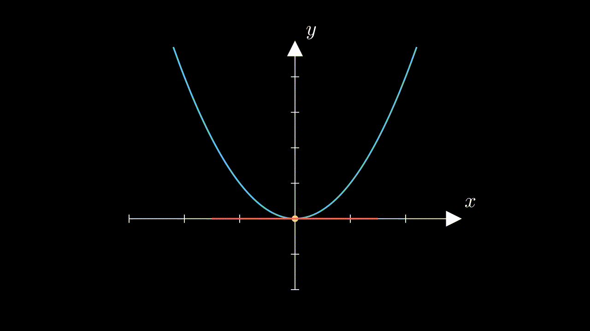
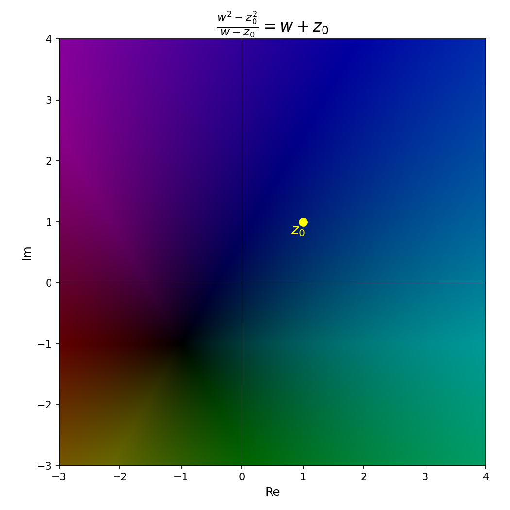

The following writing assumes that you know the basics of multivariable calculus and complex numbers. It aims to provide an intuitive overview of some of the main results taught in introductory complex analysis courses. It does not provide the rigor of formal proof, or the proficiency developed via problem-solving.
When I ask people to explain what it might mean to talk about the derivative of a function $g:\mathbb{C}\rightarrow\mathbb{C}$, they sometimes muse about slopes of planes in four-dimensional-space. This mistake happens due to an excessive commitment to one notion of a derivative.
People mentally model the idea of a derivative in many ways. According to one such model, the derivative of a function $f: \mathbb{R}\rightarrow\mathbb{R}$ at a point $x_0$ is the slope of the tangent line of $f$ at $x_0$.
Displayed below is the derivative of $x^2$ at a point $x_0$, denoted by a yellow dot. The derivative is given by the slope of the red line.

This notion of a derivative actually makes many unnecessary assumptions about $f$. For one, it assumes $f$ has a graph, and that a point on this graph can be associated with its tangent line. Both of these assumptions fail to generalize to higher dimensions and to complex numbers.
For this reason, I prefer the equivalent limit definition of a derivative. On this view, the derivative of $f$ at $x_0$ is the average rate of change of $f$ between $x_0$ and $x_0 + \Delta{x}$, as $|\Delta{x}| \rightarrow 0$. (If this seems unfamiliar, recall that the average rate of change in $f$ between $x$ and $x + \Delta{x}$ is $\frac{f(x + \Delta{x}) - f(x)}{\Delta{x}})$. This view of derivatives also makes it clear how to use them: if we know $\frac{\Delta{f}}{\Delta{x}}$ -- the average rate of change between $x_0$ and $x_0 + \Delta{x}$ -- when $|\Delta{x}|$ is small, then we can approximate $f$ at $x_0 + \Delta{x}$.
How can we visualize the limit definition? One way is to imagine the real line with a point $x_0$ fixed. Now for each number $t \neq x_0$, we can calculate the average rate of change in $f$ between $t$ and $x_0$. The derivative is the limit of this rate as $t \rightarrow x_0$ (the "rate-of-change-function" has a hole at $x = x_0$, which does not pose an issue for finding its limit). If $f(x) = x^2$ and we want to calculate $f'(1)$, this looks like the following:
Since this average rate of change approaches $2$ as $t \rightarrow 1$, we conclude that $f'(1) = 2$. If we want to calculate the derivative of $f$ at a different point, we have to move the yellow dot $x_0$ and repeat this process. The point of calculating $\lim_{t \rightarrow x_0}\frac{f(t) - f(x_0)}{t - x_0}$ is, of course, to approximate $f(x)$ for $x$ close to $x_0$. And this is the notion of derivatives that is easy to generalize to complex numbers.
Suppose that $g: \mathbb{C} \rightarrow \mathbb{C}$. We would expect the derivative of $g$ at a point $z_0$ to be the averate rate of change in $f$ between $z_0$ and $z_0 + \Delta{z}$ as $|\Delta{z}| \rightarrow 0$. Defining the average rate of change amounts to just swapping some variables for other ones. Between $z_0$ and $z_0 + \Delta{z}$, the average rate of change in $g$ is $\frac{g(z + \Delta{z}) - g(z)}{\Delta{z}}$.
The above guess is correct. Let's consider $g(z) = z^2$ and its derivative at $z_0 = 1 + i$. Let's calculate the average rate of change between $z_0$ and $w$ and see what happens when $w$ gets close to $z_0$.
As we can see, $g'(z_0) = 2 + 2i = 2z_0$, as we would expect. Alternatively, we can visualize the average rate of change between $z_0$ and $w$ for all possible choices of $w$ at once.

Crucially, in sufficiently small circles enclosing $z_0$, the average rate of change between $z_0$ and $w$ is approximately constant. This is what causes the limit $$\lim_{|\Delta{z}| \rightarrow 0}\frac{f(z + \Delta{z}) - f(z)}{\Delta{z}}$$ to exist in the first place. That constraint will prove important later.